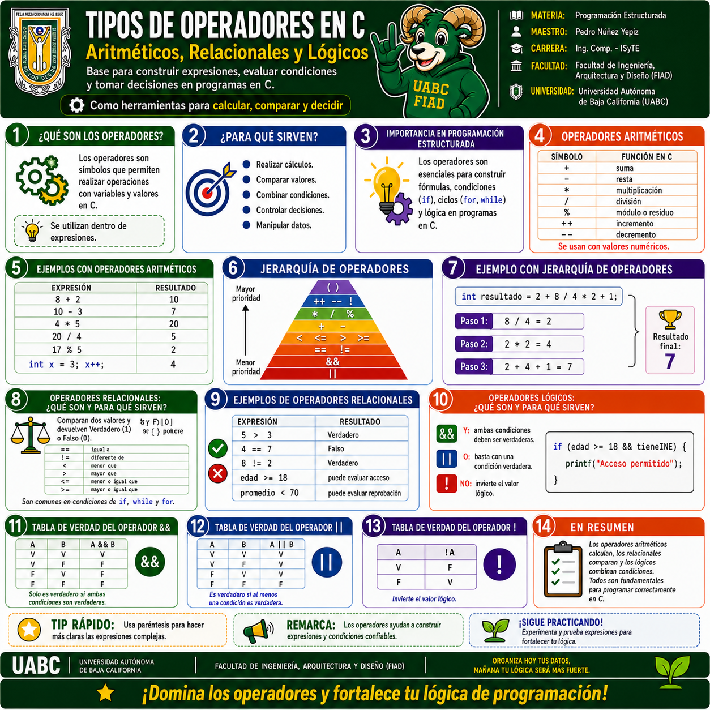

1 · Tipos de Operadores en C
Operadores aritméticos, relacionales y lógicos; ejemplos de uso,
jerarquía de operadores, evaluación paso a paso y tablas de verdad
de &&, || y !.
Selecciona la infografía para abrirla a pantalla completa. En la vista ampliada puedes usar Zoom +, Zoom −, las flechas de navegación o la tecla Esc para cerrar.

Operadores aritméticos, relacionales y lógicos; ejemplos de uso,
jerarquía de operadores, evaluación paso a paso y tablas de verdad
de &&, || y !.